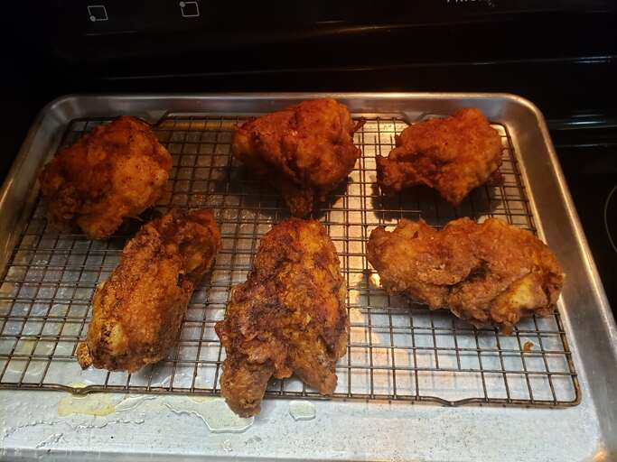

Fried Chicken

How to make Fried Chicken
There are a few reasons this crispy fried chicken works so well:
Allowing the buttermilk-flour mixture to come to a paste-like consistency is key to a crispiness on the outside and juiciness on the inside.
Most fried chicken is cooked at a high temperature throughout the frying process. This one, however, only starts at a very high heat — after browning, the heat is reduced for about 30 minutes. You'll turn up the temperature again at the end, locking in that crispy texture.
Paprika adds smoky flavor and has a low smoke point, which helps with browning the chicken.
Ingredient
- Chicken Cut a four-pound whole chicken into pieces or purchase four pounds of breasts, drumsticks, wings, legs, and/or thighs at the grocery store.
- Buttermilk Acidic buttermilk tenderizes the chicken without making it too tough. Also, it helps the flour mixture stick to the chicken.
- Flour All-purpose flour gives the buttermilk and seasonings something to stick to, while ensuring a wonderfully crispy crust.
- Seasoning This crispy fried chicken recipe calls for paprika (which helps with browning), salt, and pepper. You can add more spices and seasonings to taste.
- Oil Vegetable oil is perfect for frying chicken because it has a high smoke point.
Steps
- Making the Breading Combine the flour, paprika, salt, and pepper in a zip-top bag. Seal the bag and shake until well-combined.
- Dredge the Chicken Pour buttermilk into a shallow bowl, then dip the chicken (on both sides) until it's completely soaked in buttermilk. Place the soaked chicken in the bag with flour mixture, seal, and shake well to coat. Transfer the coated chicken to a baking sheet, and cover. Allow the flour coating to become a paste-like consistency.
- Fry the Chicken Pour the oil in a skillet and bring it to high heat. Brown the chicken on both sides, then reduce the heat, cover the skillet, and cook for about 30 minutes. Remove the cover, return the heat to high, and fry until extra crispy. Drain the chicken on paper towels.